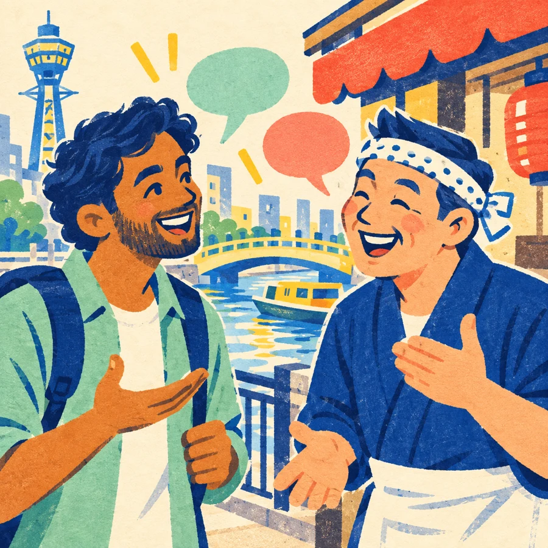

KOTOBA NO TABI · FIELD NOTES
ひとことから、日本を旅しよう。A little phrase.A whole new place.
聞いて、比べて、覚えて。あなたの「わかった」を集めよう。

地域のことば
働く分野から地域を探す製造・介護・食品など
働く場所・分野から / Start with your work area
働く場所・分野から選ぶ
働く分野を選ぶと、関係する地域が見つかります。
同じ県でも、市町村・世代・職場によって言い方は変わります。まずは近い地域から聞いてみましょう。
選んでいる地域
大阪 Osaka
まずはここから · 介護・食品・外食
職場や日常で耳にする、大阪のことばを聞いてみよう。
音声ボタンは標準的な日本語の読み上げです。地域のアクセント・イントネーションは再現していません。上の・と↗↘は、まず聞く場所と語尾の動きの目安です。
実際のひとこと
WORK · OSAKA
これ、なおしといて
Kore, naoshitoite · これ、なおしといて
これ、片づけておいて
「なおす」は、ここでは「しまう・片づける」。
Please put this away.
A common workplace or household request.
職場 / At work · 言葉だけでなく、場面も一緒に聞こう。
この地域で聞く表現
短い単語ではなく、実際の一文で覚える。
Quick check · 3 choices
「なおしといて」は、どういう意味？
方言の前に、全国で通じやすい現場日本語。
返事・確認・安全・休憩・報告。特定技能の仕事を始めた日に使う短い一文を、英語と場面つきで覚えます。
現場のカテゴリー
短い一文で、仕事を止めない。
そのまま使える一文
BASIC · REPLY
おはようございます。今日もよろしくお願いします。
Ohayō gozaimasu. Kyō mo yoroshiku onegaishimasu.
朝のあいさつ。今日も一緒に働く気持ちを伝える。
出勤したとき、同じ職場の人に言う。
Good morning. I look forward to working with you today.
Polite and safe for most workplace settings.
出勤・基本 / Arrival · basics · そのまま使える。
職種別の表現を選ぶ
FIELD ROUTES · 現場パック
働く分野から、聞く一文を絞る
製造・食品・介護・農業・宿泊など、最初の現場で出会いやすい順にまとめています。
仕事で本当に使う・聞く一文
短く返す、確認する、危険を伝える。
Quick check · 3 choices
「もう一度お願いします」は、何のため？
仕事と生活の指示を、地域ごとに聞き取る。
まず全国共通の場面を知り、そのあと同じ意味が地域でどう聞こえるかを比べます。方言は自分で使うためではなく、聞き取るための教材です。
聞く地域
大阪 Osaka
左の地域・エリアを選ぶと、同じ場面の地域差を聞けます。
聞き取りシーン
WORK · LISTEN
これ、なおしといて
Kore, naoshitoite
作業場所を片づけるように言われる。
You are told to put something away.
これ、片づけておいて。
This is the meaning to understand first.
これ、なおしといて
大阪で聞くことがある。自分で使う必要はない。
Please put this away.
Listening only · meaning depends on context.
職場 / At work · Listen for the meaning before the local word.
同じ場面を、地域のことばで聞く
文章の意味を先に知ってから、地域の音を聞く。
学び方・10分コースを選ぶ
A simple study loop · 学び方
意味 → 音 → 地域語の順番で聞く
最初から全部覚えなくて大丈夫。1つの場面を何度も聞いて、仕事や生活で聞こえたときに意味を取れるようにします。
10-MINUTE ROUTES · 10分コース
今日は、10場面だけ聞く
選択中のコース
まず、共通の場面を覚える
仕事・安全・介護・食品・農業・交通・病院・住まい。地域語を聞く前の土台です。
360件の場面を表示
Listening check · 3 choices
「なおしといて」は、何をする？
若者ことばを、空気ごと覚える。
地域の方言とは別に、全国の若い人の会話やSNSでよく見るカジュアルなことばを集めました。
Youth speech · 若者ことば
CASUAL · CHAT
それな
Sorena · それな
ほんとそれ／その通り
相手の意見に強く同意するとき。
Exactly. / So true.
Very casual; common in chat and among friends.
友だち・チャット / Friends & chat · Not for formal work emails.
いま使われるカジュアル表現
意味だけでなく、温度感と使える相手も確認しよう。
Quick check · 3 choices
「それな」は、どんな気持ち？
教材の範囲・方言の区分について
方言をどう分ける？ / How are dialects divided?
ひとつの数字では、数えられない。
方言は、分け方によって境目も数も変わります。まず大きな地域を見て、次に都道府県や市町村に近い表現を聞いていきます。
※「16」は方言の分け方の目安で、16種類しかないという意味ではありません。「約2,400」は、全国調査で調べた地点の数です。
どこから聞く？ / Where should you start?
方言の数より、働く場所から。
働く可能性のある地域を入口に、工場・介護施設・農業・宿泊など、実際の仕事や暮らしに近い場面から選べます。
まずは、今の仕事や暮らしで耳にしやすい表現から。地域や世代で使い方が変わる表現には、注意書きを添えています。